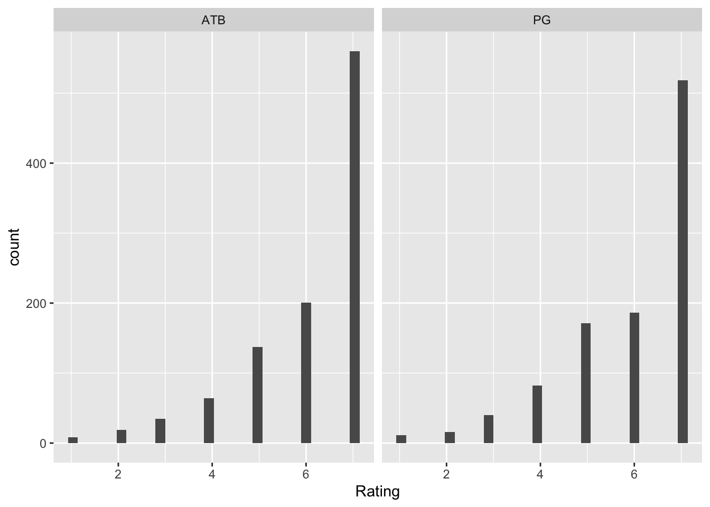
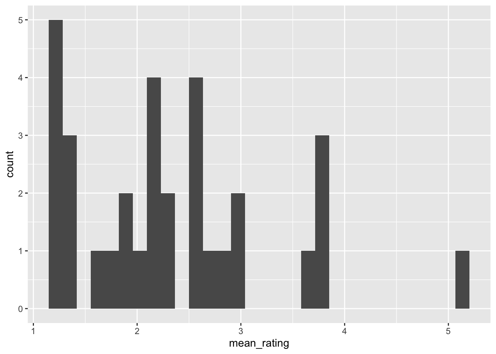

Throughout this course, we will make an extensive use of the programming language R. Here we will introduce the basic methods of loading, manipulating, summarizing and visualizing data using the tidyverse package, which may make your life a bit easier later on.
Dataset
We will use the acceptability norming dataset from Momma & Yoshida (2023). The sentences like the following were used:
Which movie did the critic watch and praise? [Across-The-Board movement]
Which movie did the critic watch before praising? [Parasitic gap sentences]
The dataset also contains obviously good-sounding and obviously bad-sounding filler sentences of various types.
Loading data as a ‘tibble’ object.
The data are stored in csv format, so you need to import them. To do so, you can use the function read_csv(). Note that this is different from the read.csv() function in base r. the read_csv function loads the data in a ‘tibble’ format, which is a table format often used in the tidyverse framework.
# A tibble: 3,328 × 6
Subj_ID Rating Sentence Condi…¹ Item_ID List
<chr> <dbl> <chr> <chr> <dbl> <chr>
1 ddbc836a2df857339b8aa9115a6d93fb 6 Which policy d… ATB 33 A
2 ddbc836a2df857339b8aa9115a6d93fb 6 Which movie di… ATB 9 A
3 ddbc836a2df857339b8aa9115a6d93fb 7 Which manuscri… ATB 5 A
4 ddbc836a2df857339b8aa9115a6d93fb 6 Which vase did… ATB 39 A
5 ddbc836a2df857339b8aa9115a6d93fb 6 Which sculptur… ATB 15 A
6 ddbc836a2df857339b8aa9115a6d93fb 7 Which manuscri… ATB 21 A
7 ddbc836a2df857339b8aa9115a6d93fb 7 Which chair di… ATB 29 A
8 ddbc836a2df857339b8aa9115a6d93fb 7 Which question… ATB 49 A
9 ddbc836a2df857339b8aa9115a6d93fb 7 Which guitar d… ATB 11 A
10 ddbc836a2df857339b8aa9115a6d93fb 7 Which car did … ATB 23 A
# … with 3,318 more rows, and abbreviated variable name ¹Condition
A nice feature of a tibble format is that it tells you the type of each column, e.g., = character, = double.
Manipulating and summarizing data using dplyr
filter()
The dataset contains both filler and experimental sentences. Let’s say you want to create a data frame where the data from filler trials are removed. You can use the filter() function.
# A tibble: 2,048 × 6
Subj_ID Rating Sentence Condi…¹ Item_ID List
<chr> <dbl> <chr> <chr> <dbl> <chr>
1 ddbc836a2df857339b8aa9115a6d93fb 6 Which policy d… ATB 33 A
2 ddbc836a2df857339b8aa9115a6d93fb 6 Which movie di… ATB 9 A
3 ddbc836a2df857339b8aa9115a6d93fb 7 Which manuscri… ATB 5 A
4 ddbc836a2df857339b8aa9115a6d93fb 6 Which vase did… ATB 39 A
5 ddbc836a2df857339b8aa9115a6d93fb 6 Which sculptur… ATB 15 A
6 ddbc836a2df857339b8aa9115a6d93fb 7 Which manuscri… ATB 21 A
7 ddbc836a2df857339b8aa9115a6d93fb 7 Which chair di… ATB 29 A
8 ddbc836a2df857339b8aa9115a6d93fb 7 Which question… ATB 49 A
9 ddbc836a2df857339b8aa9115a6d93fb 7 Which guitar d… ATB 11 A
10 ddbc836a2df857339b8aa9115a6d93fb 7 Which car did … ATB 23 A
# … with 2,038 more rows, and abbreviated variable name ¹Condition
%>% is known as pipe, and it is an operator that takes the output of one function and passes it onto another function as an argument. The benefit of using this becomes clear in a minute.
You can also filter the data using a certain numerical threshold. Let’s say you want to subset the data so they only acceptability scores lower than 4.
# A tibble: 129 × 6
Subj_ID Rating Sentence Condi…¹ Item_ID List
<chr> <dbl> <chr> <chr> <dbl> <chr>
1 ddbc836a2df857339b8aa9115a6d93fb 1 Which movie di… ATB 43 A
2 ddbc836a2df857339b8aa9115a6d93fb 1 Which book did… ATB 27 A
3 49189b961f14912e503b9424d79991b0 3 Which guitar d… ATB 11 A
4 608824109a1b7d5ebbff3faa89f26f57 3 Which formula … ATB 31 A
5 608824109a1b7d5ebbff3faa89f26f57 3 Which girl did… ATB 61 A
6 608824109a1b7d5ebbff3faa89f26f57 3 Which movie di… ATB 9 A
7 608824109a1b7d5ebbff3faa89f26f57 3 Which question… ATB 49 A
8 608824109a1b7d5ebbff3faa89f26f57 2 Which horse di… ATB 25 A
9 608824109a1b7d5ebbff3faa89f26f57 3 Which cake did… ATB 17 A
10 608824109a1b7d5ebbff3faa89f26f57 2 Which paper di… ATB 47 A
# … with 119 more rows, and abbreviated variable name ¹Condition
select()
Sometimes, you want to remove the columns that you don’t need. To do so, you can use the select() function from the dplyr package, which is included in the tidyverse package. To remove a column, you can use the ‘-’ operator. For example, suppose that you don’t want to remove the “Sentence” column.
df_clean <- df %>%select(-Sentence)df_clean
# A tibble: 3,328 × 5
Subj_ID Rating Condition Item_ID List
<chr> <dbl> <chr> <dbl> <chr>
1 ddbc836a2df857339b8aa9115a6d93fb 6 ATB 33 A
2 ddbc836a2df857339b8aa9115a6d93fb 6 ATB 9 A
3 ddbc836a2df857339b8aa9115a6d93fb 7 ATB 5 A
4 ddbc836a2df857339b8aa9115a6d93fb 6 ATB 39 A
5 ddbc836a2df857339b8aa9115a6d93fb 6 ATB 15 A
6 ddbc836a2df857339b8aa9115a6d93fb 7 ATB 21 A
7 ddbc836a2df857339b8aa9115a6d93fb 7 ATB 29 A
8 ddbc836a2df857339b8aa9115a6d93fb 7 ATB 49 A
9 ddbc836a2df857339b8aa9115a6d93fb 7 ATB 11 A
10 ddbc836a2df857339b8aa9115a6d93fb 7 ATB 23 A
# … with 3,318 more rows
You can also keep the columns you want by simply telling which column you want to keep.
Often, you want to compute descriptive statistics separately by condition, by subject, by item, etc. In such cases you can the combinations of two functions: group_by() and summarize(). For instance, you can compute the mean rating by condition.
You can also compute various descriptive statistics simultaneously. For example:
descriptive_stats_by_condition <- df %>%group_by(Condition) %>%summarize(mean =mean(Rating), median =median(Rating), sd =sd(Rating), max =max(Rating), min =min(Rating))descriptive_stats_by_condition
# A tibble: 4 × 6
Condition mean median sd max min
<chr> <dbl> <dbl> <dbl> <dbl> <dbl>
1 ATB 6.07 7 1.31 7 1
2 filler_bad 2.34 2 1.76 7 1
3 filler_good 6.18 7 1.40 7 1
4 PG 5.95 7 1.36 7 1
The benefit of using the pipe operator is that you can chain multiple operations. For instance, you can first filter the dataset and then compute the descriptive statistics.
# A tibble: 2 × 2
Condition mean
<chr> <dbl>
1 ATB 6.07
2 PG 5.95
mutate()
You sometimes want to create a new column by using information in the other columns. In that case, you can use the mutate() function. For instance, suppose that you want to add a column with standardized rating scores (z-score, i.e., how many standard deviations away from the mean a value is) by subject. This is often useful when analyzing acceptability judgment data:
# A tibble: 3,328 × 7
# Groups: Subj_ID [32]
Subj_ID Rating Sente…¹ Condi…² Item_ID List Ratin…³
<chr> <dbl> <chr> <chr> <dbl> <chr> <dbl>
1 ddbc836a2df857339b8aa9115a6d93fb 6 Which … ATB 33 A 0.383
2 ddbc836a2df857339b8aa9115a6d93fb 6 Which … ATB 9 A 0.383
3 ddbc836a2df857339b8aa9115a6d93fb 7 Which … ATB 5 A 0.752
4 ddbc836a2df857339b8aa9115a6d93fb 6 Which … ATB 39 A 0.383
5 ddbc836a2df857339b8aa9115a6d93fb 6 Which … ATB 15 A 0.383
6 ddbc836a2df857339b8aa9115a6d93fb 7 Which … ATB 21 A 0.752
7 ddbc836a2df857339b8aa9115a6d93fb 7 Which … ATB 29 A 0.752
8 ddbc836a2df857339b8aa9115a6d93fb 7 Which … ATB 49 A 0.752
9 ddbc836a2df857339b8aa9115a6d93fb 7 Which … ATB 11 A 0.752
10 ddbc836a2df857339b8aa9115a6d93fb 7 Which … ATB 23 A 0.752
# … with 3,318 more rows, and abbreviated variable names ¹Sentence, ²Condition,
# ³Rating_z[,1]
define your own function
It is useful to know how to define your own function in R. As an exercise, let’s define a function that computes a z-score (that’s what the scale() function does).
# A tibble: 3,328 × 7
# Groups: Subj_ID [32]
Subj_ID Rating Sente…¹ Condi…² Item_ID List Ratin…³
<chr> <dbl> <chr> <chr> <dbl> <chr> <dbl>
1 ddbc836a2df857339b8aa9115a6d93fb 6 Which … ATB 33 A 0.383
2 ddbc836a2df857339b8aa9115a6d93fb 6 Which … ATB 9 A 0.383
3 ddbc836a2df857339b8aa9115a6d93fb 7 Which … ATB 5 A 0.752
4 ddbc836a2df857339b8aa9115a6d93fb 6 Which … ATB 39 A 0.383
5 ddbc836a2df857339b8aa9115a6d93fb 6 Which … ATB 15 A 0.383
6 ddbc836a2df857339b8aa9115a6d93fb 7 Which … ATB 21 A 0.752
7 ddbc836a2df857339b8aa9115a6d93fb 7 Which … ATB 29 A 0.752
8 ddbc836a2df857339b8aa9115a6d93fb 7 Which … ATB 49 A 0.752
9 ddbc836a2df857339b8aa9115a6d93fb 7 Which … ATB 11 A 0.752
10 ddbc836a2df857339b8aa9115a6d93fb 7 Which … ATB 23 A 0.752
# … with 3,318 more rows, and abbreviated variable names ¹Sentence, ²Condition,
# ³Rating_z
Data visualization using ggplot2
It’s always useful to visualize your data to understand what’s going on. The tidiverse package comes with a package named ggplot2, and it is a powerful tool for data visualization. There are a whole bunch of things we can do with ggplot2, but we are gonna create two basic types of graphs for now.
Let’s first make a histogram. Histograms are pretty useful for visualizing how a variable of interest is distributed, and often, the first thing you want to do with your data is to create the histogram.
`stat_bin()` using `bins = 30`. Pick better value with `binwidth`.

Sometimes, you may want to look at subject-wise or item-wise distributions. Let’s take a look at the distribution of average ratings of the bad filler sentences by subject.
`stat_bin()` using `bins = 30`. Pick better value with `binwidth`.

You may notice that 1 subject didn’t really judge bad fillers as bad. This may be a signal that that person didn’t really pay attention to the task. Generally, plotting distributions is very useful for noticing something odd in your data.
Another widely used type of plots are bar plots. Barplots can be created by using the geom_barplot() function. Say you want to plot the mean ratings of each condition.
Barplots are useful (especially when you put error bars - we don’t put error bars here because computing ‘errors’ is actually complicated. We will come back to this issue later), but they do not contain any information about how variables are distributed. In some cases, you may want to make a boxplot instead:
Compute the mean and the standard deviation of the z-scored acceptability rating using group_by() %>% summarize(). z-score should be computed for each subject separately.
Suppose that you want to identify ‘bad’ subjects, who did not reliably discriminate between good and bad filler sentences. Using various functions introduced above, create a tibble object that shows mean rating differences between good and bad filler sentences for each subject.
Do the same but for each item instead of for each subject.
Create a boxplot plotting the acceptability rating by condition, where each data point corresponds to an item (rather than subject) average.